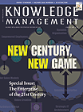
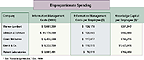

January 2000
Subscribe
e-Mail the Editor
|
When Spending is Investing
Employee value reflects motivation, sense of purpose, absence of organizational friction, low turnover and customer loyalty.
By Paul A. Strassmann
 We have all seen the differences in performance between one company where employees are motivated and committed and another where the workers are just in it for the paycheck. But how can the value of such a gap be quantified?
We have all seen the differences in performance between one company where employees are motivated and committed and another where the workers are just in it for the paycheck. But how can the value of such a gap be quantified?
Last month, I showed that there can be a great disparity in Knowledge Capital per employee at otherwise similar companies. One plausible explanation for this variable value of employees might be differences in the companies' spending on information management and computer technology. Unfortunately, the facts don't support this conclusion.
Instead, to arrive at a rough but useful measure of spending on information management, I take the sum of all expenses for general and administrative, sales, and research and development. The chart below shows how much each of the firms in our pharmaceutical industry sample spent on these information management activities in 1998:
How can we explain that Warner-Lambert—the firm we calculated last month had Knowledge Capital per employee of only $261,847, the lowest of any in our sample—spends 25 percent more money on information management per employee than does Merck, a company that has more than five times greater Knowledge Capital per employee?
Clearly, there's too great a discrepancy to be explained by the characteristics of the employees as individuals. The table also shows that spending for information is not correlated with the accumulation of Knowledge Capital. It is also true, as I have written elsewhere, that the difference cannot be rationalized by comparing spending on computers.
Therefore, the only defensible explanation of employee worth is the effectiveness with which they are organized. This conclusion holds true when applied across most major U.S. industries. Whether companies were in software, electronics, chemicals, banking or furniture manufacturing, there were enormous disparities in the Knowledge Capital valuations between the top- and bottom-ranking firms—differences that could be not be explained either by spending for information or by computer budgets.
Investing in people

Knowledge Capital accumulates when a dollar spent for information is not merely an expense but becomes an investment. For example, a $300 sales call by a pharmaceutical company salesperson can be either a $300 deduction from profits or a $300 investment in a relationship that will generate future revenues without costly and frequent sales visits. The same rationale can be applied to just about every information management expense, whether it is holding a staff meeting, writing a report, attending a scientific symposium or spending time in professional development.
Not all information-spending dollars are equal. Some are squandered, as when the sales force spends 40 percent of its time reconciling incorrect client billings and arguing about the calculations of their commissions. Knowledge is wasted on a grand scale when employees who were paid over many years to learn about the company's products, customers, suppliers and intra-organizational relationships are suddenly seen as an entirely worthless asset—a phenomenon that was frequently seen during the past decade's misguided vogue for "re-engineering."
Knowledge can be also created whenever an organization convinces customers that the product or service of a firm has lasting value, without having to spend further dollars advertising or marketing. I find that almost everything associated with the enhancement of quality, reliability, trustworthiness and demonstrable customer benefits can be classified as an augmentation to Knowledge Capital. Thus, Knowledge Capital resides not only in the heads of employees but also as a purchasing preference in the minds of customers.
One of the most imaginative techniques of Knowledge Capital accumulation is to transfer a firm's information management costs to others. For instance, Microsoft—a firm with 32,000 employees—has succeeded in enticing more than 700,000 of its customers to test its Windows 2000 software. These customers are doing work that otherwise would show up as a reduction in Knowledge Capital. Testing is also a learning and habit-forming process, which also accrues knowledge to the company in the form of customer loyalty.
E-commerce offers novel means for extending Knowledge Capital accumulation across an entire value-chain.
Extending capital
E-commerce offers novel means for extending Knowledge Capital accumulation across an entire value-chain. When customers can tap directly into the supplier's business processes, the parties in the transaction can retain the economic value now extracted by brokers, wholesalers and distributors.
Knowledge Capital accumulation takes place over a long time—often several decades. It reflects relationships, motivation, sense of purpose, absence of organizational friction, low employee turnover and customer loyalty. Therefore, Knowledge Capital represents the summation of thousands of little gains and thousands of small depletions.
An organization that succeeds in channeling the energies of its people to productive uses will keep accumulating knowledge, showing high Knowledge Capital per employee while spending less money on information than firms that must continually re-learn what they already knew.
Ultimately, Knowledge Capital accumulation is not merely a technical matter of improving information management through data mining, intranets, groupware, conferencing and information repositories. How a firm sets out to accumulate Knowledge Capital is a matter of corporate strategy and competitive survival. Measuring Knowledge Capital Accumulation Efficiency, therefore, becomes the key metric for judging the effectiveness of knowledge management. Next month I will describe how to make such calculations.
Paul A. Strassmann, formerly the Deputy Asst. Secretary of Defense and vice president of strategic planning for Xerox Corp., originated the "information productivity," "return-on-management" and "knowledge capital" trademarked concepts.
|